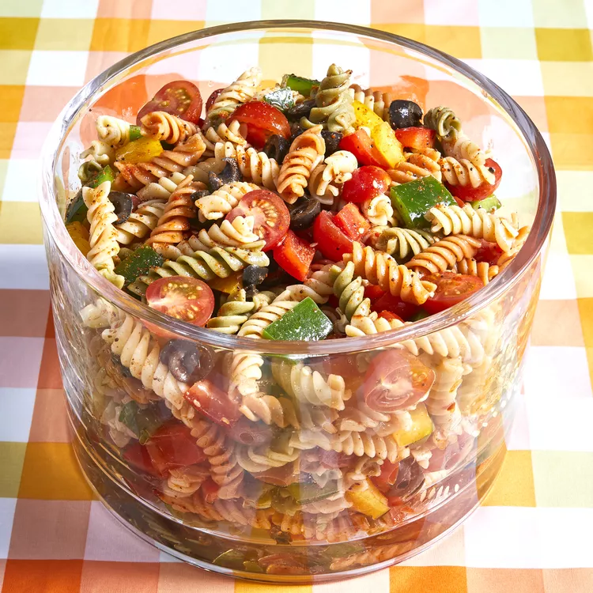

This pasta salad recipe was given to me by a dear friend many years ago, and
I've been making it ever since! It's great for barbecues.
Prep Time:20 mins
Cook Time:10 mins
Additional Time:8 hrs
Total Time:8 hrs 30 mins
Servings:6
Bring a large pot of lightly salted water to a boil. Cook pasta in the boiling water,
stirring occasionally, until tender yet firm to the bite, about 10 to 12 minutes
rinse under cold water and drain.
Whisk Italian dressing and salad spice mix together until smooth.
Combine pasta, tomatoes, bell peppers, and olives in a salad bowl; pour
dressing over salad and toss to coat. Refrigerate salad, 8 hours to overnight./p>